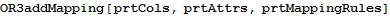

Step1: Retrieve Columns and Attributes
Retrieve Columns of a Data Set
With References
With Names
Retrieve Attributes of a Model
With References
With Names
Step 2: Map Columns on Attributes
Match Fields of suppliers.tsv with Attributes of Supplier Entity
Specify the Mapping Rules
Visualize Bipartite Mapping
Match Fields of parts.tsv with Attributes of Part Entity
Specify the Mapping Rules
Visualize Bipartite Mapping
Match Fields of catalog.tsv with Attributes of Catalog Entity
Specify the Mapping Rules
Visualize Bipartite Mapping
Step 3: Add Mapping Between Columns and Attributes Using Directed Hyperlink (LTS_MAP)
Each Column of suppliers.tsv Table --- isMappedInto ---> An Attribute of Supplier Entity
Each Column of parts.tsv Table --- isMappedInto ---> An Attribute of Part Entity

Each Column of catalog.tsv Table --- isMappedInto ---> An Attribute of Catalog Entity